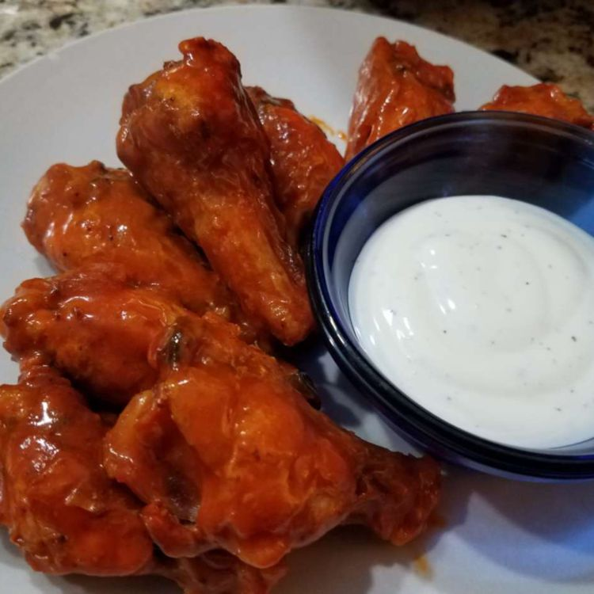

Baked Blazing Hot Wings

Description
Cooking frozen chicken wings in the oven instead of frying them is a great way to get crisp, juicy wings.
Ingredients
This is what you need to cook baked chicken wings:
- Frozen chicken wings: 5 pounds
- Hot pepper sauce (such as Frank's RedHot®): 2 cups
- Butter: ½ cup
- Distilled white vinegar: 2 tablespoons
- All purpose flour: 1 tablespoon
Steps
Now let's get started!
- Preheat the oven to 400 degrees F (200 degrees C). Arrange frozen chicken wings in a single layer in a shallow baking dish.
- Bake in the preheated oven for 25 minutes. Flip wings over and continue to cook until skin is crispy and meat is no longer pink at the bone, about 20 minutes more. An instant-read thermometer inserted into the center should read at least 165 degrees F (74 degrees C).
- Meanwhile, combine hot sauce, butter, and vinegar in a saucepan over medium heat; cook and stir until butter melts, about 5 minutes. Whisk in flour until sauce is smooth, then continue to cook and stir until sauce is thickened, about 5 minutes more.
- Drain grease from chicken wings and let stand for 5 minutes. Transfer chicken to a large bowl and add sauce. Toss to coat.